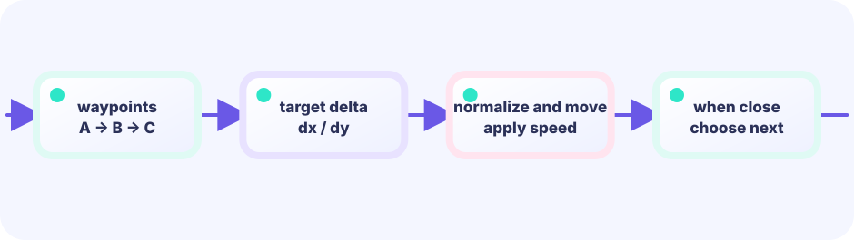

Patrol
Each enemy moves by vx every tick. When the enemy reaches a platform edge or loses ground support, vx flips sign. The enemy bounces endlessly within its patrol zone.
e.vx = -e.vx // reverse
★★★☆☆ / PLAYABLE
Stomp patrolling enemies from above and reach the flag. This lesson adds the classic Mario rule: land on top to defeat, touch from the side to take damage.
On screen you see original hero Ebi Tenjiroh; hits still use simple shapes. Movement math still lives in the same LEVEL 01 state boundary.
PLAYABLE / WEBASSEMBLY
A/D or tap the lower screen to move. Space or tap the upper screen to jump. You have 3 lives — a side hit costs one.
FIRST-TIME READER
Find where this one line is used, then follow how its value changes on screen. This is the shared game-state boundary: add rules in Update, then choose an independent presentation in Draw. The numbered steps below add one system at a time.
ONE RULE TO TRACE
Match the explanation to this line, then test the change in the game.
stomp := oldBottom <= enemy.y && newBottom >= enemy.y
DEEP DIVE / PATROL & STOMP
Collision detection doesn't just ask "are they overlapping?" — it also asks "from which direction?". A stomp is only registered when the player is falling (vy > 0) AND their feet were above the enemy's head before the overlap. Any other contact means damage. Enemies patrol by reversing direction at platform edges, or whenever their footing disappears.
Each enemy moves by vx every tick. When the enemy reaches a platform edge or loses ground support, vx flips sign. The enemy bounces endlessly within its patrol zone.
e.vx = -e.vx // reverse
Overlap is confirmed first, then check: is the player falling (vy > 1) and was their foot above the enemy's top (oldBottom <= e.y+8)? If yes, it's a stomp.
if vy > 1 && oldBottom <= e.y+8
Any non-stomp contact deducts one life and respawns the player at the start position. Three losses trigger game over.
g.life--; g.player.x = 30
TRY IT / LAB
Only positive vy (falling) counts as a stomp; rising takes damage.
A slow-motion model of the real game rule.
TRY IT · GO
if vy > 0 && fromAbove(player, enemy) { enemy.dead = true; vy = bounce } else { player.hurt() }
—
THE ONE-LINE RULE
if vy > 1 && oldBottom <= e.y+8 { stomp! }
otherwise
else { take damage }
The "from above" direction is determined by comparing oldBottom (the player's foot position last frame) with the enemy's top (e.y + 8). A small tolerance makes close calls feel satisfying rather than unfair.
IN THE REAL GAME
Once overlap is confirmed, falling speed and last-frame foot position decide the outcome. A stomp bounces the player upward (vy = -8), enabling multi-stomps in a single jump.
if overlap(g.player, e.rect) {
if g.vy > 1 && oldBottom <= e.y+8 {
// stomp!
e.alive = false
g.player.y = e.y - g.player.h
g.vy = -8 // bounce the player up
} else {
// side or bottom contact
g.life--
g.player.x = 30
g.player.y = 590
g.vx, g.vy = 0, 0
if g.life <= 0 {
g.over = true
}
}
}WITHOUT DIRECTION CHECK
A plain overlap check can't tell stomp from side hit. Without the direction condition, every contact deals damage and the game feels broken.
WITH EDGE PATROL
Checking for platform edge support means enemies reverse course on their own. Just change starting positions and speeds to create varied difficulty.
YOUR FIRST TUNING
Raise individual vx values for faster enemies, or increase g.life for more forgiveness. Adding more enemies or changing their starting platforms dramatically shifts difficulty.
FEEDBACK